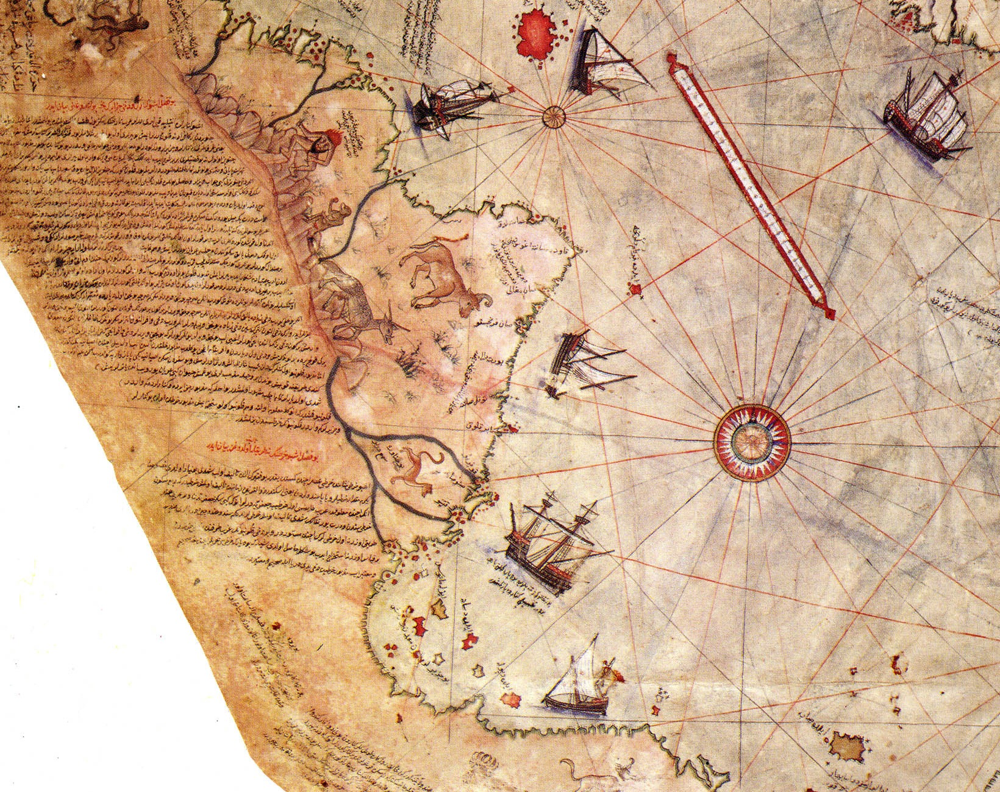
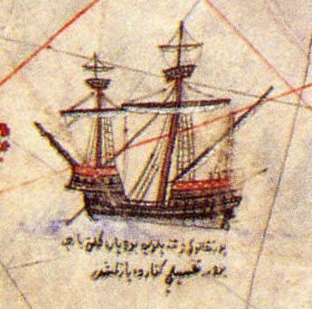

Zusammenfassung
Die Piri-Reis-Karte ist kein Internet-Hoax, keine moderne Fälschung und kein nebulöses Hörensagen. Sie ist ein realer, heute nur teilweise erhaltener Kartenfund auf Gazellenhaut, zusammengestellt vom osmanischen Admiral und Kartografen Piri Reis. Der überlieferte Fragmentteil wurde 1929 im Topkapı-Palast wiederentdeckt und sorgte sofort für Aufsehen, weil er den Atlantikraum und die Küsten Südamerikas erstaunlich detailliert darstellt, obwohl diese Weltregion aus europäischer Sicht gerade erst kartografisch erschlossen wurde.


Was historisch ziemlich gut gesichert ist
Piri Reis datierte die Karte selbst auf 1513. In ihren Inschriften erklärt er, dass er mehrere ältere Vorlagen zusammengeführt habe, darunter portugiesische Karten, arabische Materialien, klassische geografische Traditionen und sogar eine Karte von Christoph Kolumbus, die heute als verloren gilt. Genau dieser Punkt macht die Karte auch historisch so wertvoll: Sie ist nicht nur ein Einzelwerk, sondern vermutlich ein Fenster in eine inzwischen verschwundene Kartenüberlieferung.
- Urheber: Piri Reis, osmanischer Admiral und Kartograf
- Datum: 1513
- Material: Gazellenhaut-Pergament
- Aufbewahrung: Topkapı-Palast / Istanbul
- Wiederentdeckt: 1929
- Besonderheit: nur ungefähr ein Drittel der ursprünglichen Karte ist erhalten
Warum sie so früh so gut aussieht
Für viele Fachleute ist die wichtigste Erklärung keine Magie, sondern kluge Kompilation. Piri Reis war kein isolierter Geniekünstler im luftleeren Raum. Er arbeitete in einem maritimen Netzwerk, in dem osmanische, iberische, arabische und mediterrane Wissensströme zusammenliefen. Wenn man gute Küstenportolane, Reiseberichte und ältere Kartenquellen kombiniert, kann plötzlich ein Kartenbild entstehen, das seiner Zeit weit voraus wirkt.
Trotzdem bleibt die Präzision in einigen Bereichen bemerkenswert. Vor allem die atlantischen Distanzen, die westafrikanische Küste und Teile Brasiliens sehen für 1513 beeindruckend aus. Das heißt nicht automatisch, dass dort geheime Satellitendaten verborgen sind. Es heißt aber sehr wohl: Die Kartografie der frühen Neuzeit war leistungsfähiger, vernetzter und raffinierter, als populäre Vereinfachungen oft annehmen.

Die große Antarktis-Frage
Jetzt zum Teil, wegen dem die Karte ihren Legendenstatus bekommen hat: Der südliche Küstenverlauf am unteren Rand wurde im 20. Jahrhundert von manchen Autoren als eisfreie Antarktis interpretiert, teils konkret als Queen Maud Land. Die Behauptung lautete, die Karte zeige eine Küste, die offiziell erst Jahrhunderte später entdeckt wurde, und zwar sogar vor moderner Eisbedeckung. Das ist natürlich Mystery-Gold.
Der wissenschaftliche Mainstream ist hier deutlich skeptischer. Viele Historiker und Kartografie-Forscher halten den umstrittenen Abschnitt eher für eine verzogene, verlängerte oder falsch zusammengesetzte Südküste Südamerikas, möglicherweise beeinflusst durch unvollständige portugiesische Vorlagen, Projektionseffekte oder die Notwendigkeit, verschiedene Küstensegmente auf einem Portolan-Gerüst zusammenzuziehen. Kurz: Die Antarktis-Deutung ist spektakulär, aber keineswegs Konsens.
Skeptische Lesart vs. Mystery-Lesart
Die skeptische Seite sagt: Ja, die Karte ist außergewöhnlich, aber erklärbar. Portolane können Küsten erstaunlich präzise abbilden, ohne modernes Längenmaß. Die Karibik ist auf der Piri-Reis-Karte gerade nicht fehlerfrei, Inseln und Konturen sind teils seltsam kombiniert, und genau das spricht eher für eine kreative Zusammenstellung alter Quellen als für verlorene Superzivilisationen.
Die Mystery-Seite kontert: Gerade die Mischung aus Treffern und bizarren Elementen macht den Fall spannend. Wenn einige Küstenlinien so gut sind, warum sollte man nicht zumindest offenlassen, dass sehr alte, heute verlorene Vorlagen im Umlauf waren? Vielleicht nicht Atlantis mit Lasertechnik, aber womöglich eine Kartentradition, deren Reichweite wir unterschätzen.
Was moderne Analysen beitragen
Neuere Arbeiten aus der Kartografiegeschichte, digitale Vergleiche und geometrische Analysen versuchen, die Piri-Reis-Karte nicht bloß als Kuriosität, sondern als komplexes Mosaik unterschiedlicher Quellen zu lesen. Dabei zeigt sich oft, dass einzelne Segmente stärker sind als das Gesamtbild. Das spricht dafür, dass Piri Reis Material mit verschiedener Qualität und vielleicht sogar unterschiedlicher Projektion kombinierte. Für Historiker ist das hochinteressant, weil es die Karte von einer isolierten Sensation zu einem Knotenpunkt globalen Wissensaustauschs macht.
Und trotzdem bleibt Platz fürs Staunen. Denn auch wenn die nüchterne Erklärung häufig die bessere ist, verschwindet die Faszination nicht. Im Gegenteil: Dass eine osmanische Karte von 1513 in so vielen Details immer noch Debatten lostritt, ist bereits sensationell genug.
Sourkraut-Briefing Fazit
Die Piri-Reis-Karte ist am stärksten, wenn man sie weder kleinredet noch überdreht. Sie ist ein echtes Artefakt, historisch bedeutend, visuell großartig und intellektuell gefährlich genug, um bis heute Diskussionen auszulösen. Zeigt sie wirklich Antarktis ohne Eis? Wahrscheinlich nicht, wenn man der Mehrheitsmeinung der Forschung folgt. Ist die Sache damit langweilig? Überhaupt nicht. Denn das eigentliche Rätsel ist vielleicht noch besser: Wie viel präzises, verlorenes Kartenwissen zirkulierte um 1500 bereits zwischen Kulturen, Imperien und Seefahrern? Genau dort wird die Akte richtig stark.